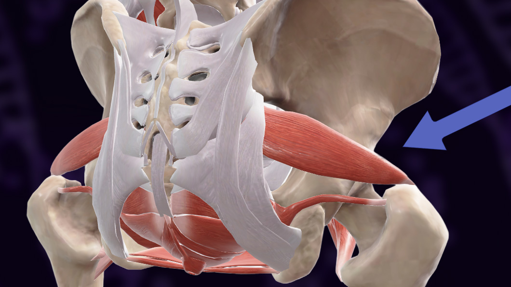
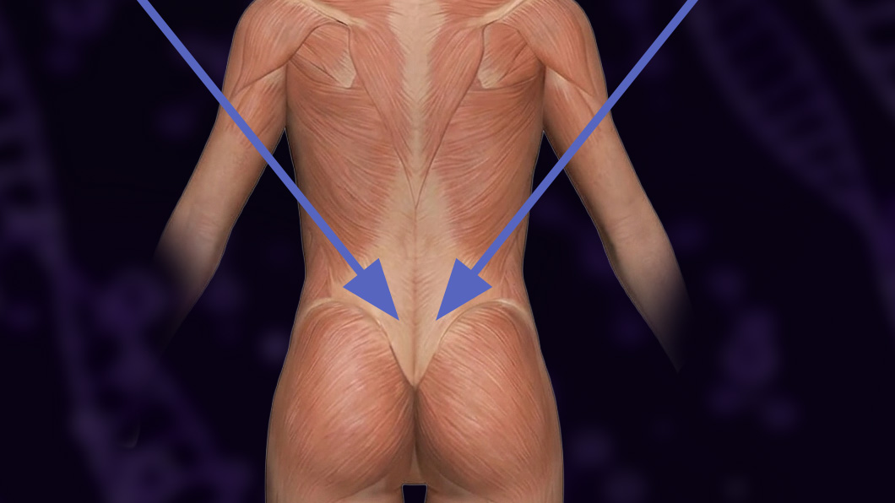
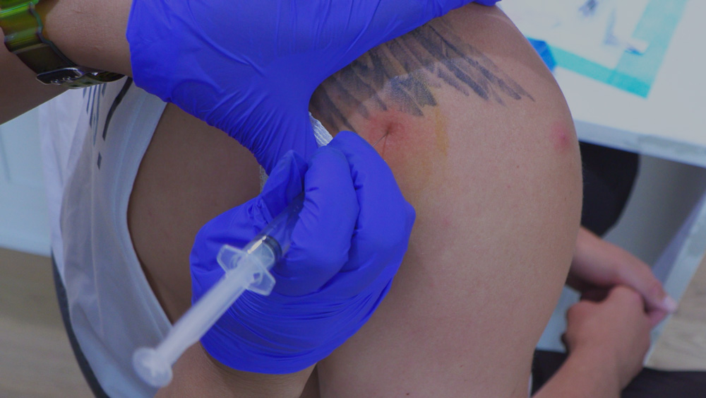

ℹ️
Key principle: Stem cells are not like cortisone. You don't need fluoroscopy or imaging guidance for most of these joints. Accurate landmark identification gets you close enough — the cells do the rest.
Knee
Anatomy & Landmarks
The knee joint space is accessible from both sides when the patient is seated with the knee bent (approximately 90°). The joint opens up in this position, creating space between the condyles.
- Anterior-lateral approach: Most common. Enter from the lateral (outside) of the front of the knee — there is typically more space on this side.
- Anterior-medial approach: Alternate entry on the medial (inside) of the front of the knee.
- Patella: If chondromalacia is suspected (patient has pain when you move the kneecap back and forth on assessment), inject just below the patella — lateral or medial — with the leg straight.
Dosing
- Standard: 2 cc BioFlex (intra-articular)
- BioFusion upgrade: Reconstitute 1 vial BioAer into thawed BioFlex, combine in syringe — administer as one injection
- If patella is also involved: second injection site, same dosing
Procedure Notes
- Patient seated, knee at ~90°
- Clean injection site with alcohol prep pad
- Use a 25–27g needle for comfort
- Inject product slowly — the joint space will accept it without resistance if placed correctly
- If you feel resistance, reposition slightly — do not force
⚠️
Patella injection is performed with the leg straight, not bent. Assess for chondromalacia (pain on passive patella movement) before adding this site.
Hip
⚠️
Know your anatomy. Hip pain frequently originates from sources other than the joint itself — ligament tightening, bursitis, or referred pain. X-ray confirmation of arthritis is helpful before committing to a specific injection site. When in doubt, first-line treatment is physical therapy.
Anatomy & Landmarks
Patient positioned on their side, affected hip up. Identify the following landmarks by palpation:
- Greater trochanter: The bony prominence at the lateral upper thigh. Feel for the head of the greater trochanter.
- Hip bursa: Located over the greater trochanter. A divot or valley in this area indicates the hip joint space on the lateral aspect.
- Injection site: Lateral aspect, upper thigh — where you feel that valley between the greater trochanter landmarks.
Hip arthritis often presents as pain in the front (groin area), even though the injection is lateral. The stem cells will migrate to the inflamed area once in the joint.

Dosing
- Joint: 2 cc BioFlex
- Bursa (if bursitis is indicated): Consider a separate injection into the bursa — same product, secondary site
- BioFusion (adding BioAer) available as upgrade
Procedure Notes
- Lateral decubitus position — affected hip up
- Palpate greater trochanter, locate the valley/divot of the joint space
- Clean with alcohol prep pad
- Longer needle may be required depending on body habitus
- Inject into the lateral joint space; cells will navigate from there
Lower Back
🚫
Never inject directly into the spine. Intraspinal injection without fluoroscopy guidance is contraindicated. All back injections are paraspinal — into the muscle tissue alongside the spine, not into the spinal canal or disc space.
Anatomy & Landmarks
Lower back injections target the paraspinal muscles bilaterally at the level of the patient's maximum pain or at the level indicated by imaging (MRI/X-ray).
- Paraspinal approach: Inject alongside the spine — not into it
- Bilateral: Always treat both sides, even if pain is predominantly unilateral
- Level: Inject at the vertebral level where the patient reports the most pain, or where imaging shows pathology
- Applies equally to mid-thoracic and cervical paraspinal injections

Dosing
- BioFlex: 2 cc (split bilateral — 1 cc each side)
- BioXsomes: 1 cc added for inflammation support
- Add IV BioFlow if condition is systemic or chronic
Procedure Notes
- Patient prone or seated and forward-flexed
- Palpate spinous processes to locate the level; inject 1–2 cm lateral to the spinous process on each side
- Standard 25g needle; depth depends on patient body habitus
- No aspiration required for paraspinal muscle injection
- Document level treated (e.g., L4–L5 paraspinal, bilateral)
Shoulder
Anatomy & Landmarks
The shoulder (glenohumeral joint) is commonly approached from the posterior or lateral aspect. The subacromial bursa is the most common target for shoulder pain. Rotator cuff involvement may require separate site consideration.
- Posterior approach: Patient seated, arm relaxed. Locate the posterior acromion and the soft spot just below and medial to the posterior acromion tip.
- Lateral approach: Enter just below the lateral edge of the acromion. Direct needle slightly downward and medially into the subacromial space.
- Confirm with passive range-of-motion assessment before choosing approach

Dosing
- Standard: 2 cc BioFlex (intra-articular or subacromial)
- BioFusion: Add BioAer for enhanced exosome support — recommended for rotator cuff pathology or chronic impingement
- Consider add-on IV BioFlow for systemic anti-inflammatory support
Procedure Notes
- Patient seated with arm hanging relaxed (not abducted)
- Clean with alcohol prep; use 25g 1.5" needle
- Advance needle slowly; inject once resistance decreases (you're in the bursal space)
- If significant resistance, reposition slightly — do not inject into tendon
- Post-injection: brief rest, no overhead lifting for 48 hours
Neuropathy & Foot
Overview
Peripheral neuropathy — characterized by burning, tingling, numbness, or loss of sensation in the feet — responds well to local injection targeting the nerve supply at the foot and ankle level. The goal is to revive and regenerate the nerve endings, not just treat pain.
Symptoms that indicate this protocol: burning sensation, feet "on fire," tingling, loss of sensation, numbness. Often diabetic or chemo-related.
Anatomy & Injection Sites
- Dorsal cutaneous approach: Top of the foot — primary injection site for most neuropathy presentations
- Lateral ankle: Lateral (outside) of the foot by the ankle — second injection site; targets the lateral cutaneous nerve distribution
- Peroneal nerve: For more severe neuropathy, inject higher — at the peroneal nerve (lateral lower leg, fibula head area) to address the nerve further upstream
- Inject 1–3 sites per foot depending on severity and patient response
Dosing
- BioFlex: 2 cc per leg (distribute across 1–3 injection sites per foot)
- Add-on IV: Consider BioFlow IV to decrease systemic inflammation and support nerve regeneration throughout the body
- Both legs treated in the same session if bilateral neuropathy
💡
Red light therapy (low-level laser therapy) applied to the feet improves blood flow and can enhance neuropathy outcomes. If the clinic has this capability, coordinate with the treatment plan.